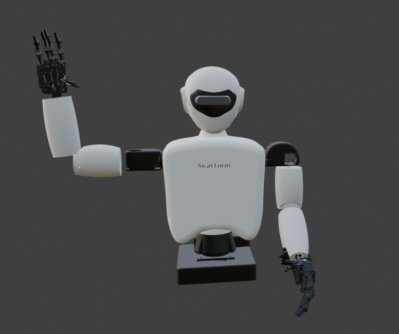
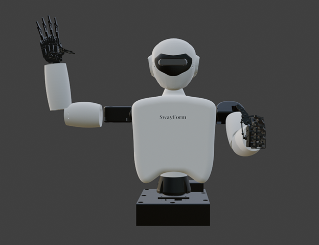

A real physical platform running ROS 2. Students write code, connect it to hardware, and watch a machine respond. Click the anatomy hotspots below to explore every system.

Click any hotspot. The viewer animates into that part and holds on the labeled image.

Click a hotspot on the robot to explore that system.
ROS joint names, PCA9685 channels, safe ranges, and servo models.
Key components. Click any card for details.
The robot's brain. Runs Ubuntu 22.04, ROS 2, the hardware driver, and all student nodes. Connects to everything over GPIO, I²C, USB, and WiFi.
Publishes synchronized color and depth image streams. Color at 640×480, depth per pixel in millimeters. USB-connected to Pi. Min range ~0.3m.
16-channel PWM controllers on I²C. Two units give 32 total channels. Addresses 0x40 and 0x41. 12-bit resolution, 50Hz default frequency.
High-torque metal-gear servo for large joints (shoulders, elbows). Stall torque 13kg/cm at 6V. PWM range 500–2500µs.
Micro metal-gear servo for small joints (wrists, fingers, neck pitch). Stall torque 2.2kg/cm at 5V. Same PWM timing as MG996R.
Accelerometer + gyroscope on one I²C chip. Publishes on /swayform/imu. Used for tilt detection, shake triggers, and orientation-aware behaviors.
Time-of-flight distance sensor. Range 2cm–4m, ±3mm accuracy. Key for proximity-triggered greetings and obstacle detection behaviors.
Main input rail. Steps down to 6V servo rail and 5V Pi rail via buck converters. Never connect/disconnect while servos are active.
3.5mm from Pi 5 → PAM8403 amp → 3W speaker. Software: pyttsx3 for TTS, pygame.mixer for clips. Triggered via /swayform/audio_command.
The servo rail and Pi rail are intentionally separate. Current spikes from motors should never reset the Pi.